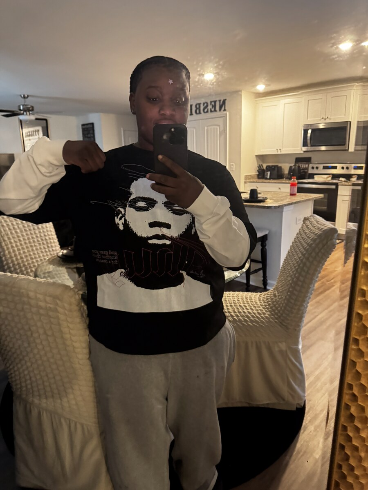

Hi, I'm Zy'Aria Stokley Nesbitt, a Computer Science student at North Carolina A&T State University with a focus on Data Engineering. I've built a couple of data pipelines to get hands-on exposure to the field, and I'm currently interning at CliquePrize this fall as a Database Engineer Intern. Outside of school and work, I enjoy talking, people watching, relaxing, and having fun with my friends. My favorite color is green!
